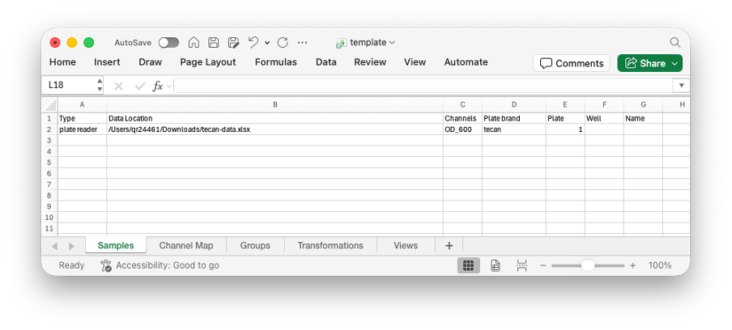
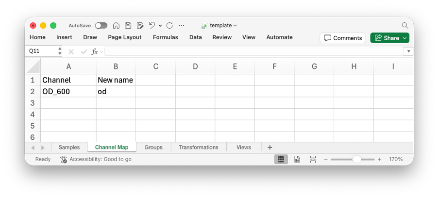
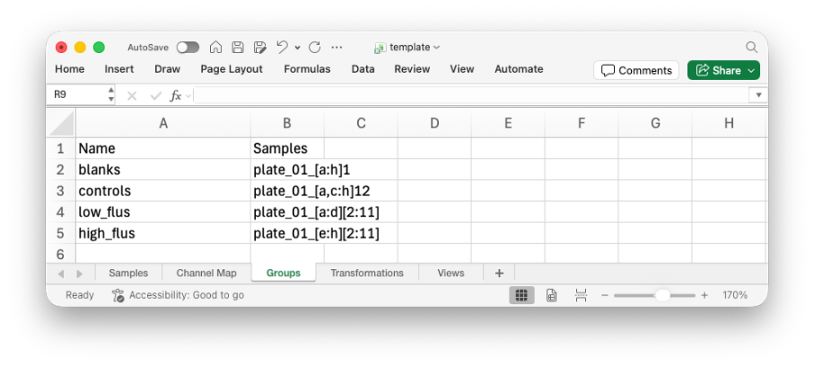
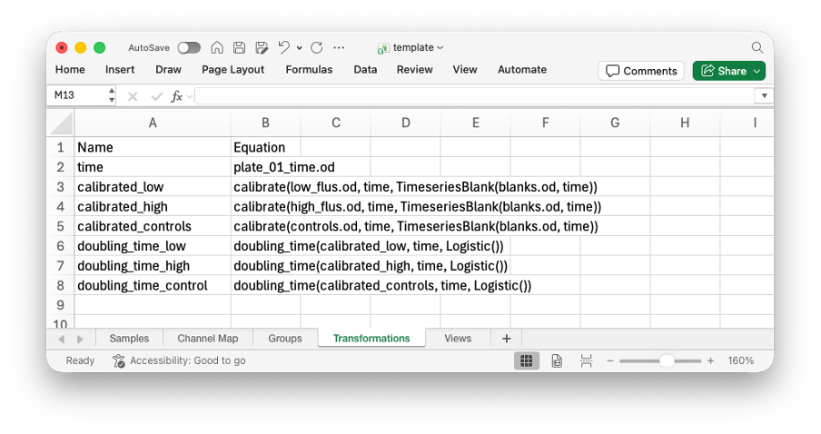
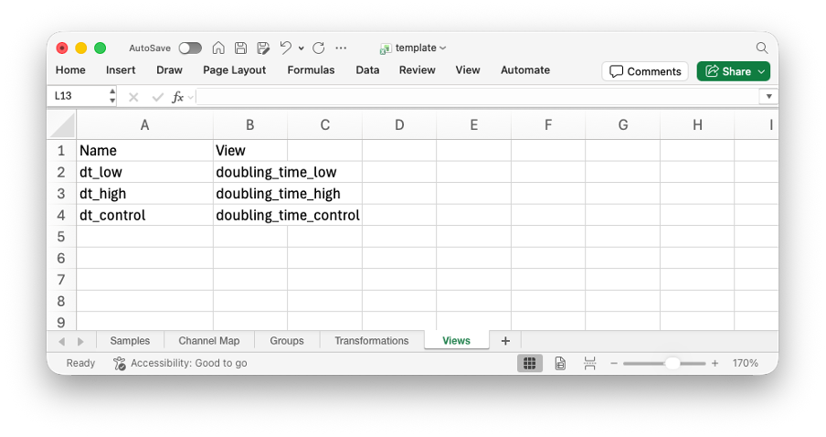

Excel Interface
The Excel interface is accessed through esm template .... It provides an Excel spreadsheet template which can be filled in with information about your data and processing. This is required to create a .esm file from which outputs and views can be produced.
The Excel template features five sheets to be filled out with relevant information:
- Samples
- Channel map
- Groups
- Transformations
- Views
On this page, we document what is required to be filled out and give examples of how to use the Excel template file.
Samples
The first sheet is called Samples and requires information about where you data is stored and what information should be read from it.
Each row specifies a new file that should be imported into the final .esm file.
The Type defines whether the data is plate reader or flow to determine how that file should be imported. These are the only two options.
The Data Location gives the full filepath to the data. It should include any filename extensions (like .xlsx or .csv)
Channels identifies the specific channels that you would like to save in the ESM file. If left blank, then all will be saved. This should be a comma-separated list is multiple channels are to be included. Spaces may be optionally included after the commas. The channel names should be formatted as they are printed by esm summarise.
The Plate brand identifies the format the data will be in and how it should be parsed. Available options are: spectramax, biotek, bmg, tecan and generic. Leave it blank for flow cytometry data.
The next few columns control the naming scheme for the samples. By default this will look something like plate_01_a1.OD_600.
The Plate column lets you put in labels for plates. Here, we have labelled the sample 1. The final name for this plates will be plate_01.
For data where a single file is recorded for each well, such as flow cytometry data, a Well can be specified. For example, if you have flow cytometry data from different wells, stored in different .fcs files, you can label the well that each .fcs file corresponds to, giving you access to the files as plate_01_a1, plate_01_a2, etc.
The sample names will be stored as plate_0$Plate$_$Well$. That is unless a name is provided in the third column.
The Name column can override a plate name. In this case, anything entered into the Name column will replace the entire plate_01-style name. This only happens for flow cytometry data.

Channel map
Here you can rename any channels. On the left, provide the channel name, as specified on the previous sheet. On the right, provide the new name for the channel. In this example, rather than using plate_01_a5.OD_600, we would then use plate_01_a5.od.

Groups
In this sheet, you can group samples together. For example, you may want to group all of your blank well together to make them easier to refer to.
There are a few formats for doing this. The simplest is to just write out all the samples in a comma separated list (i.e. plate_01_a1, plate_01_a2, plate_01_a3).
To make this a bit shorter, you may choose to use the compressed format. In this format, anything specified in [] is expanded.
[b:d]gets expanded tob,c, andd.[b:2:f]gets expanded tob,d, andf(step of 2).[a,d,e]gets expanded toa,d, ande.- Numerals are treated likewise.
All these formats can be mixed together in any combination, so plate_0[1,2]_[a:c]1, plate_04_a2 is treated the same as plate_01_a1, plate_01_b1, plate_01_c1, plate_02_a1, plate_02_b1, plate_02_c1, plate_04_a2.
Additional metadata can be added to each group by adding more columns. Each column name indicates the metadata name with the value in each row providing the value for that group.

Transformations
On the transformations sheet, you can define the post-processing you want to apply to your data. This typically involves calibrations and calculating summary statistics.
In the left column, you can name your transformation. In the right column, you can provide the code for the transformation you want to run. This can be arbitrary Julia code, but most commonly is just calling one of the ESM methods for Plate Reader and Flow Cytometry data.
In the example below, we define a short name for the times from plate 1. Then we calibrate our groups based on the blank group, then calculate doubling times on each of the calibrated transformations.

Views
Finally, the views describe a subset of transformations, groups and samples that you actually want to look at, outside of ESM. This is typically used for your final post-processed data, but can also be useful for debugging (viewing inputs and outputs from a transformation to make sure it is working as intended).
In the example below, we have three views named dt_low, dt_high, and dt_control, which uses the doubling times calculated by their corresponding transformations. Instead of using a transformation, we could have also used a group name, or a sample name.
